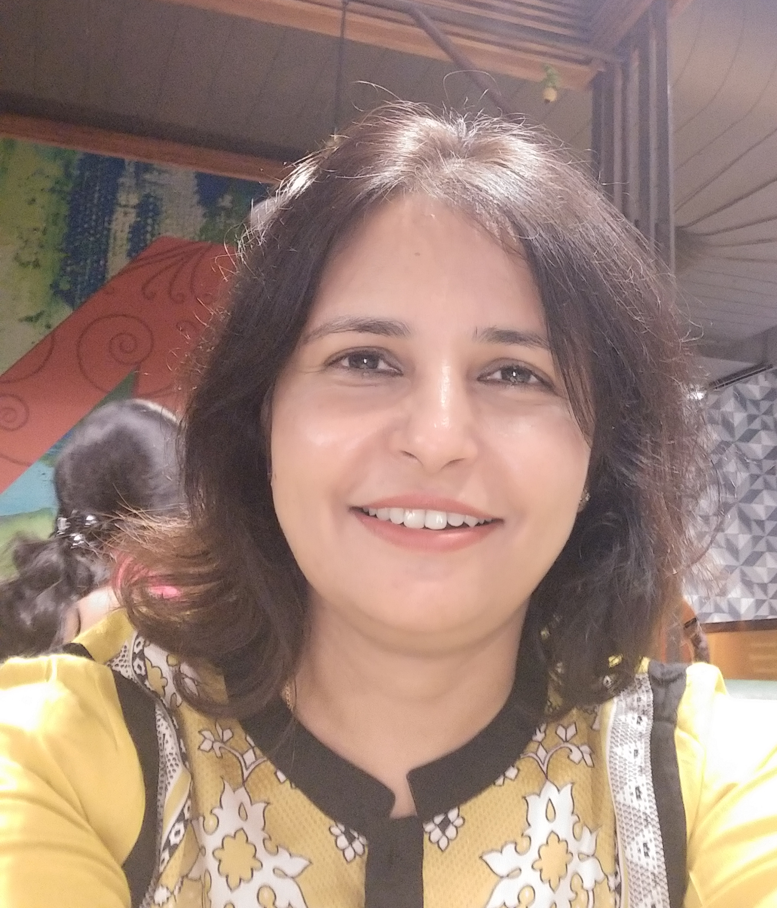
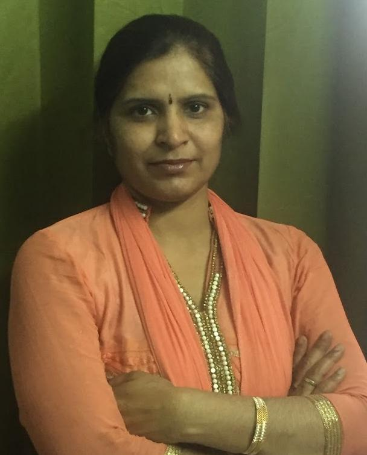

Our Publishing Partner
All accepted and presented papers of WREC21 will be published by
About
Though women are underrepresented in engineering, but the number has been growing consistently as more women are opting to pursue studies in this field and still there is a lot required to be done to encourage this trend. We would like to dedicate this conference so as to promote and encourage women engineers and motivate young girls to follow their academic interests to a career in engineering. With a view to inspire women engineers, pioneer and successful women achievers in the domains of VLSI design, wireless sensor networks, communication, image/ signal processing, machine learning, and emerging technologies have been identified from across the globe and invited to present their work and address the participants in this women oriented conference. All the keynote speakers, tutorial presenters, session chairs and the members of conference organizing team are women. The conference aspires to provide a platform for researchers, engineers, academicians as well as industrial professionals to showcase innovative and interdisciplinary research findings on practical as well as theoretical advancements in Electronics, Communication and Signal Processing.
However, participation is not limited to women candidates only. It is open for all the researchers in specified areas.
CONFERENCE TRACKS
-
Signal and
Image Processing
Chair: Dr Savita Gupta, Professor, UIET, Chandigarh
Dr Amamika Dubey, AP, Washington State University, USA- Signal Processing Algorithms and Architecture
- Pattern Recognition and Object Tracking
- Biomedical Signal and Image Processing
- Design and Implementation of Signal Processing
- Signal Processing for Communication and Networking
- Soft Computing and its Applications to Signal Processing
- Signal processing for Smart Systems
- Human-Computer Interface
- Signal Processing for Cyber Security
- Signal Processing for Big Data
- Internet of things and RFID
- Digital and Multirate Signal Processing
- Audio/Speech and Language Processing
- Machine Learning and Deep Learning for Signal Processing
-
Communication, Wireless Sensor Networks
Chair: Dr Neena Gupta, Professor, PEC Chandigarh
Dr Gurmeet Kaur, Professor, Punjabi University- Wired, Wireless, Visual, and Acoustic Technologies
- Machine learning for 5G and beyond
- 5G trial implementation and deployment including real-world problems,
- Machine learning and deep learning for all types of networks
- mmWave Technology
- Massive MIMO
- MIMO-based networking
- Ultra-reliable low latency communications (URLLC)
- Massive Machine Type of Communication
- Cellular/cell-free massive MIMO
- Multiple Radio Access Technologies (M-RATs) interworking
- Next generation radio access networks (RAN)
- Mobile sensing and applications
- Mobility management and models
- Channel modelling and performance analysis
-
VLSI Design
Chair: Dr Rajeevan Chandel, Professor, NIT Hamirpur
Dr Alpana Aggarwal, Professor, Thapar University, Patiala- Analog, mixed-signal, and RF designs
- Low-power and thermal-aware design
- Logic and Physical synthesis
- FPGA prototyping
- Reconfigurable computing
- Electronic Design Automation (EDA)
- Hardware/software co-design
- Processor and memory design
- Multicore systems
- Design for Testability
- Embedded system design and IoT
- System-on-Chip (SoC)
- Circuits and systems for signal processing and communication
- Micro-architectural Design
- Challenges for advanced technology nodes
- Nanoelectronics
- Post-CMOS technologies and architectures
-
Emerging
Technologies
Chair: Dr Arvinder Kaur, Professor, IPU Delhi
Dr Harpreet Kaur, Educator, Hacienda La Puente Unified School District, USA- Soft Computing and Applications
- Natural Language Processing
- Feature Engineering
- Blockchain Technology and Applications
- Gamification
- Serious Games
- Learning Technologies and Applications
- Cloud, Fog and Edge Computing
- Deep Learning and Machine Learning Applications
- Geographic Information Systems and Applications
- Virtual/Augmented Reality
- Information Security
Keynote Speakers

Prof Nilmini Wickramasinghe
Swinburne University of Technology, Australia
Health 4.0
Digital Health is essential in today's world. The COVID-19 pandemic has highlighted the benefits of digital health. Digital Health is powered by the developments of technologies making up Internet of Things (IoT) including sensors, mobile, 3D printing, analytics and more. This presentation will highlight key areas and provide insights into how the technologies of IoT can provide superior healthcare for all.
Prof. Maryam Shojaei Baghini
IIT-Bombay
Modular Sensor Interfacing and Signal Conditioning
Sensing devices are becoming a part of communication technologies or a part of portable and mobile measurement devices to bring a new age of ubiquitous sensing. Integrable sensor modules demand modular interfacing, analog signal conditioning and integrable solutions compatible with the analog to data and information transformation. The solutions must suppress the noise, have the required sensitivity, and reduce effect of non-idealities. In this talk examples of low-noise, discrete and integrated designs for the interacting and signal conditioning of sensor signals in various forms and from different sensing elements are presented.
TUTORIALS
Game-driven Electronic Design Automation
In this tutorial, I will present highly visual interactive design frameworks that we have developed to harness human intelligence for mapping/placement and architecture design for custom reconfigurable devices. People excel at navigating complex and dynamically changing situations, recognizing recurring patterns, and identifying potential opportunities. I will show how these reasoning and problem solving skills can be brought to bear in solving the mapping challenge for custom reconfigurable architectures.

Dr Gayatri Mehta
University of North Texas
AI tools to combat antimicrobial resistance (AMR)
Antimicrobial Resistance is fast emerging to be one of the biggest challenges in healthcare across the world. Rampant inappropriate use of antibiotics is by far the biggest contributor to this problem. Dr Seema Singh will be conducting a tutorial around the potential role of data analytics and AI based decision support systems in driving the judicious use of antibiotics in healthcare practice.
Event Schedule
Here is our event schedule
PROGRAMME SCHEDULE
Inaugration
Plenary Talk
Paper Presentation
Session 1
Session 2
Session 3
Conference Tutorial 1 Dr Gayatri Mehta
University of North Texas, Reconfigurable Computing
Keynote Address 1 Dr Nilmini Wikramasinghe
Prof Digital Health and Deputy Director, Iverson Health Innovation Research Institute Swinburne University of Technology, Australia
Paper Presentation
Session 4
Session 5
Paper Presentation
Session 6
Session 7
Session 8
Keynote Address 2Prof Maryam Shojaei Baghini
Department of Electrical Engineering
IIT-Bombay, Powai
Mumbai, INDIA
Paper Presentation
Session 9
Session 10
Conference Tutorial 2 Dr Seema Singh
Medical doctor and former Assistant Professor in Surgery, University College of Medical Sciences, University of Delhi.
End of Conference
Discussions on Feedback, Vote of Thanks
CONFERENCE CHAIRS

Prof. Lalit Kumar Awasthi
Director,
Dr B R Ambedkar NIT, Jalandhar
CHIEF PATRON
Prof. Lalit Kumar Awasthi, is presently the Director at Dr B R Ambedkar National Institute of Technology, Jalandhar. He has done his PhD from IIT Roorkee and his areas of specialization are Distributed Computing, and Wireless Sensor networks. He has published more than 200 research articles in journals and conferences and has 4 IPRs to his credit. He is an educational leader and has played a dominant role in the growth and building of many technical Institutions, where he has served in various capacities, as Director, Principle, Dean. Under his dynamic leadership, NIT Jalandhar has recorded a giant leap in NIRF rankings by more than 61 places and is ranked 52nd among the top engineering institutes of the country. With his motivation, faculty has filed 45 IPRs and 02 technology transfers. Recently, with the aim to establish STI hub for technology development and dissemination, a DST funded project worth Rs. 2.49 Corers is sanctioned to the institute under his mentorship.

Dr Mamta Khosla
Associate Professor & Head
Electronics and Comm. Engg.
Executive General Chair
Dr Mamta Khosla is currently working as an Associate Professor in the Department of Electronics and Communication Engineering, NIT Jalandhar. She joined the institute in year 1992. She is actively involved in the various administrative responsibilities at institute level and department level. She is the coordinator of SMDP- C2S Project funded by MHRD, New Delhi and also coordinated other sponsored projects from MHRD and DST-FIST project. So far, she has guided 07 students for research guidance at Doctorate’s level. Her research interest includes Digital Systems Design, Soft Computing and Nano scale Semiconductor Devices.

Dr Indu Saini
Assistant Professor
Electronics and Comm. Engg.
Executive General Chair
Dr Indu Saini is currently working as an Assistant Professor in the Department of Electronics and Communication Engineering, NIT Jalandhar. She joined the institute in year 2002. She has received sponsored projects from MeitY, and MHRD, New Delhi. She is also awarded with Distinguished Woman in engineering award from Centre for Advanced Research and Design (CARD) of Venus International Foundation and Bharat Excellence Award by FFI, India in the year 2019. She has contributed more than 59 research articles in refereed International Journals and International Conferences papers. Her research interests include Biomedical Signal Processing; Machine Learning Algorithms, and VLSI Design.

Dr Neetu Sood
Assistant Professor
Electronics and Comm. Engg.
Program General Chair
Dr Neetu Sood is currently working as an Assistant Professor in the Department of Electronics and Communication Engineering, NIT Jalandhar. She joined the institute in year 2007. She has received sponsored projects from MeitY, New Delhi. She is also awarded with outstanding woman in engineering award from Centre for Advanced Research and Design (CARD) of Venus International Foundation in the year 2020. She has contributed more than 40 research articles in refereed International Journals and International Conferences papers. She is an active researcher in the field of Wireless Communication Systems, OFDM based Systems and Signal Processing.

Dr Deepti Kakkar
Assistant Professor
Electronics and Comm. Engg.
Program general Chair
Dr Deepti Kakkar is currently working as an Assistant Professor in the Department of Electronics and Communication Engineering, NIT Jalandhar. She joined the institute in year 2007. She is actively involved in the various activities at institute and department level. She has edited various books with reputed publishers and authored many research papers. Her research interest includes Cognitive Radios, Signal Processing, Wireless Systems, Behavior Modelling, Neuro-developmental Disorder
.jpg)
Dr Tarun Chaudhary
Assistant Professor
Electronics and Comm. Engg.
Organising Sectretary
Dr Tarun Chaudhary is currently working as Assistant Professor in the Department of Electronics and Communication Engineering, NIT Jalandhar. She has joined the institute recently in year 2019 and is currently involved in organizing various events in the department. Her research interest included Nano scale device modelling, Analysis and design of low power VLSI Circuits, Characteristic study of 2D Materials based devices for Analog and Digital applications.
Contact Us
We will reach out to your queries soon